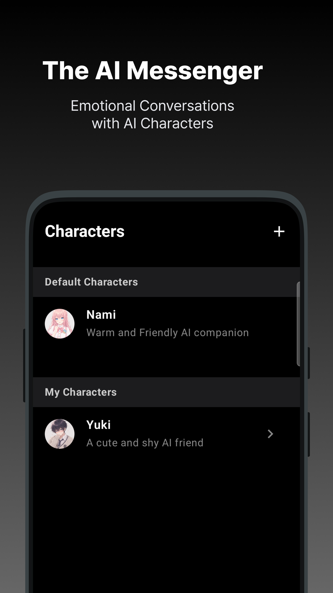
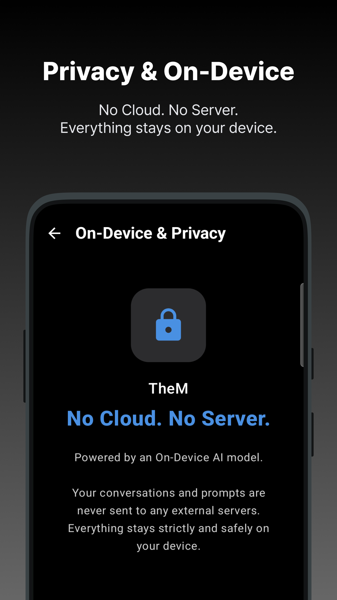
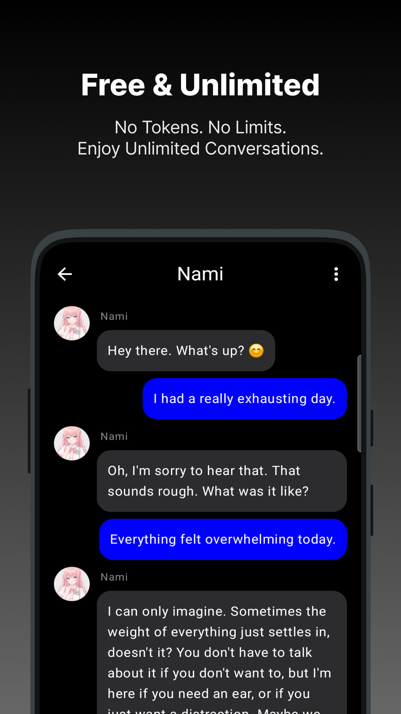
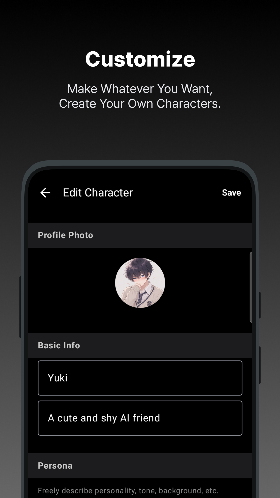

내 기기 안의 완벽한 비밀 친구,
프라이빗 AI 캐릭터 메신저.
클라우드도, 외부 서버도 없습니다. TheM은 오직 당신의 디바이스 내부에서만 독립적으로 구동되는 온디바이스 AI 캐릭터 채팅 앱입니다. 그 어떤 대화도 외부로 유출되지 않는 완전한 프라이빗 환경을 경험하세요.
깊은 교감을 나누는 캐릭터 메신저
단순한 질의응답을 넘어 사용자의 감정을 이해하고 반응하는 가상의 AI 파트너들과 메신저 형태로 대화할 수 있습니다. 독자적인 장기 기억 아키텍처 알고리즘이 적용되어 대화가 거듭될수록 당신만을 위한 고유한 관계로 진화합니다.
No Cloud. No Server.
모든 대화 내역과 프롬프트는 외부 서버 / 데이터베이스로 전송되지 않으며 100% 기기 내부(On-Device)에서 엄격하게 처리됩니다. 네트워크 연결이 끊긴 오프라인 상태에서도 완벽하게 안전한 대화 환경을 보장합니다.
제한 없는 무제한 대화
대화 한 통마다 차감되던 토큰 제한이나 요금의 압박에서 벗어나세요. 기기의 하드웨어 자원을 직접 활용하기 때문에, 추가적인 비용이나 제약 없이 영구적으로 자유롭고 긴 대화를 이어갈 수 있습니다.
세상에 없던 나만의 페르소나
이름, 프로필 사진부터 성격, 대화 톤앤매너, 배경 조건까지 직접 프로그래밍하여 나만의 고유한 대화 상대를 창조할 수 있습니다. 당신이 상상해 온 완벽한 페르소나를 제한과 검열 없이 온전히 구현해 보세요.
Application Interface
미리 만나보는 인터페이스




제약 없는 대화의 시작.
플랫폼별 테스트 및 사전 신청에 참여하여 서버 없이 가장 안전하고 사적인 AI 관계를 제일 먼저 선점하세요.